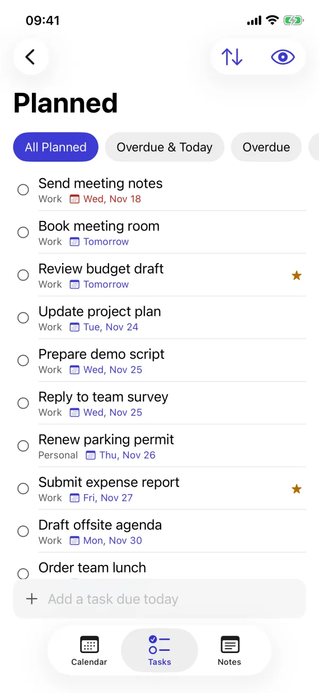
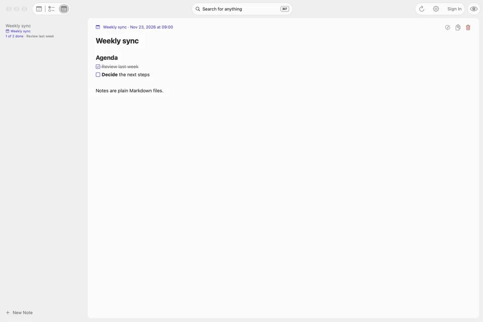

say “lanes” the is two lanes: this week and the next
Two weeks, one screen.
Your agent does the rest.
lães puts your Outlook calendar and Microsoft To Do side by side on Mac and iPhone, two weeks at a time, starting Saturday. Notes wait for you before every meeting. And an AI agent on your Mac can plan, prepare and tidy up for you.





Opinionated on purpose
Fewer settings. More plan.
lães is built around one way of working. If it is yours, everything is already where it should be.
-
Agent first
Every calendar, task and note is reachable by the AI tool you already use. Ask it to block focus time, sort your week or write the brief for tomorrow's check-in. It works through lães, on your Mac, with your rules.
-
Weeks start on Saturday
Plan the coming week on the weekend, when there is room to think. Saturday to Friday keeps the work week in one unbroken row, so Friday's loose ends and Monday's plans never sit on different screens.
-
Two weeks, not a month
This week on top, next week below. Close enough to act on, far enough to see what is coming. No scrolling, no month grid full of dots.
-
Microsoft 365, and only that
Outlook is your calendar. To Do is your task list. OneDrive keeps your notes. lães adds no account, and your calendar, tasks and notes never leave Microsoft, so there is nothing new to trust or migrate.
-
Mac and iPhone, in step
The Mac is where you plan, the iPhone is where you check. Both read the same Microsoft data and sync whenever you come back to them, even after working offline.
-
Private with one switch
Mark categories and lists as private, then hide all of them, and their notes, with the eye. Share your screen without a second thought. Your agent sees exactly what you see.
The tour
How lães keeps the plan honest




Agent first
Built for the assistant you already use
lães runs a small MCP server on your Mac, reachable only from your Mac and only with your token. Any MCP-capable tool can connect, Claude Code included. Settings has one button that turns it on and copies a setup prompt your AI follows by itself.
- Reads your weeks, tasks and notes, with full-text search across every note
- Creates tasks, blocks time and writes notes linked to meetings
- Respects the eye: what you hide, your agent can't see
- Off until you turn it on. Nothing leaves your Mac except the calls to Microsoft
$ claude mcp add --transport http laes \
http://127.0.0.1:52637/mcp \
--header "Authorization: Bearer ••••••••"
✓ Added laes
tools list_events get_event create_event
list_tasks create_task update_task
search_notes get_note create_note
update_note syncYour data
Between you and Microsoft
No lães account
You sign in with Microsoft. lães talks to Microsoft Graph and nothing else.
Works offline
A copy stays on your device. Changes made offline are sent, in order, when you are back.
Notes are files
Markdown in a OneDrive folder only lães uses. Open them anywhere, keep them forever.
Native, nothing else
Built with SwiftUI for the Mac and the iPhone. No ads and no account. The developer sees crash reports and anonymous usage counts, never your data.
Plan the next two weeks with lães
lães is in public beta for Mac and iPhone through Apple's TestFlight. It needs a Microsoft 365 work, school or personal account.
Join on TestFlightChangelog
- 1.0 (build 8)
- Search your tasks across every list, and a Completed view of what you finished.
- 1.0 (build 7)
- Notes: tick to-dos without editing, long list items line up under their text, and search forgives typos.
- The notes list shows how many to-dos are done.
- A badge on the app icon for to-dos due today or overdue, and a morning summary, in a new Notifications pane in Settings.
- On the Mac, ⌘1, ⌘2 and ⌘3 switch between Weeks, Tasks and Notes.
- 1.0 (build 4)
- Send Feedback in Settings, on Mac and iPhone.
- A prompt when a newer version is out.
- Crash reports and anonymous usage counts go to the developer, never your calendar, tasks or notes. The privacy policy lists what is sent.
- Notes: to-dos as boxes, a clean view when not editing, ⌘S to save on the Mac, and settings shared between your devices.
- iPad: both weeks on one screen, and tasks in three columns.
- 1.0
- First beta for Mac and iPhone.